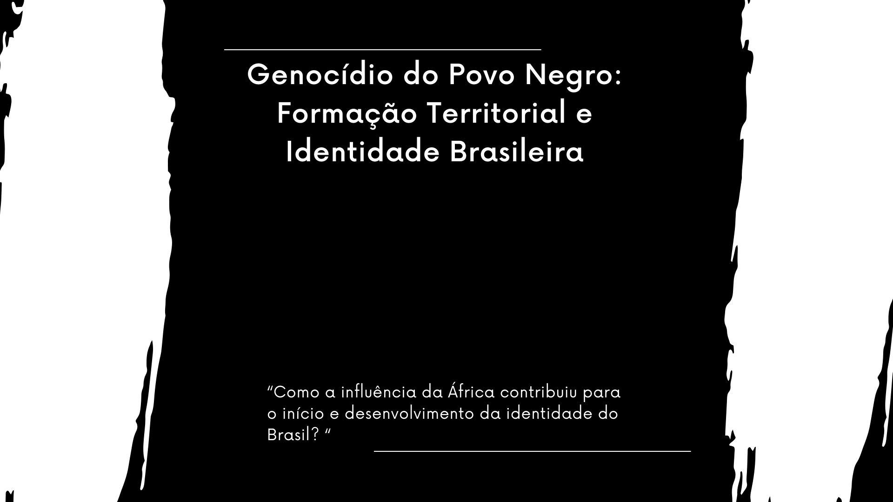

Objetivo
Esse site foi feito por alunos do 3° Ano da turma de informatica e tem como objetivo concluir a atividade que foi prospoto pela professora Bruna Rafaela da disciplina de Historia I
Formação Nacional
-
ColonizaçãoA colonização portuguesa iniciada em 1500
estabeleceu a presença europeia no Brasil.
Esse período deixou marcas linguísticas,
culturais e sociais profundas.Miscigenação étnicaA miscigenação resultante da interação entre indígenas,
africanos e europeus é um aspecto fundamental da identidade brasileira.
Essa mistura étnica deu origem a uma sociedade multicultural e diversificada, com uma variedade de tradições,
línguas, religiões e costumes.Cultura indígenaOs costumes, línguas, crenças e práticas dos povos indígenas brasileiros
têm um papel fundamental na identidade nacional, mesmo após séculos de contato e
influência de outras culturas.Imigração: A vinda de imigrantes de várias partes do mundo, como italianos, alemães,
japoneses e árabes, entre outros, influenciou a cultura, a economia e a sociedade brasileiras,
enriquecendo ainda mais a identidade nacional.IndependênciaO processo de independência do Brasil em relação a Portugal, em 1822,
marcou um ponto significativo na construção da identidade nacional brasileira.
Formação Territorial
-
Colonização portuguesaA colonização portuguesa no Brasil, questiona se foi um descobrimento ou conquista.
Destaca características como exploração, povoamento e domínio sobre os indígenas.
Argumenta que o Brasil foi conquistado, reconhecendo a presença prévia dos indígenas.
Discute os motivos por trás da colonização, como expansão comercial, religiosa e territorial.
Descreve a chegada dos portugueses em 1500, os contatos iniciais com os indígenas e o início do processo de colonização.
Foca na fundação das Vilas de São Vicente e Piratininga em 1532, o cultivo de cana-de-açúcar e o uso de mão de obra escrava para desenvolver a produção do açúcar.Tratados e Acordos"Tratados e Acordos: Foram a exploração dos tratados que definiram as fronteiras do Brasil" refere-se à análise dos acordos internacionais que determinaram as fronteiras do Brasil ao longo de sua história.
Esses tratados, como o Tratado de Tordesilhas (1494) e o Tratado de Madrid (1750), foram estabelecidos para resolver disputas territoriais e regular relações entre o Brasil e outras nações.
A exploração desses tratados envolve o estudo de seus termos, negociações e impactos históricos na formação territorial brasileiraMovimentos de ExpançãoA expansão territorial do Brasil entre o descobrimento e o Tratado de Madri em 1750 foi impulsionada pelo desenvolvimento econômico, interesses político-estratégicos e eventos como a União Ibérica (1580-1640).
Nas décadas iniciais, o povoamento se limitou às regiões litorâneas, enfrentando resistência dos nativos.
No século XVII, as atividades produtivas, a intervenção estatal contra os nativos e a ameaça de invasores estrangeiros impeliram a expansão para o interior do país.Guerra do ParaguaiA Guerra do Paraguai teve impactos significativos nas nações envolvidas.
Na Argentina, consolidou o território, mas o presidente Mitre falhou nas eleições de 1868.
No Uruguai, superou disputas políticas, mas o presidente Venancio Flores foi assassinado.
O Brasil enfrentou forte impacto econômico e endividamento, marcando o declínio da monarquia.
O Paraguai sofreu destruição material, perda de territórios e estima-se que tenha havido cerca de 150 mil mortos.
O conflito deixou um elevado número de vítimas em todos os países envolvidos. Para mais detalhes, consulteMarcha para OesteA Marcha para o Oeste, promovida durante o Estado Novo por Getúlio Vargas, tinha como meta impulsionar a economia e aumentar a população nas regiões Norte e Centro-Oeste do Brasil.
Este projeto consistiu na criação de pequenos núcleos de colonização, mas seus resultados foram modestos.
A contribuição Africana na cultura brasileira
Capoeira

Candomblé

Samba

Cocada

Feijoada

Acarajé

O Genocídio da população negra no Brasil
O genocídio da população negra no Brasil é resultado de séculos de discriminação, marginalização e violência. Desde a escravidão, os negros enfrentam exclusão social, violência policial, falta de acesso a serviços básicos e oportunidades desiguais. Isso se reflete em altos índices de homicídios, encarceramento em massa e negligência em saúde. Enfrentar esse genocídio requer ações urgentes para combater o racismo estrutural e promover igualdade de direitos e oportunidades para todos.
Figuras históricas na luta contra o genocídeo e pelo reconhecimento da identidade negra
Carolina Maria

Djamila Ribeiro

Lélia Ganzales